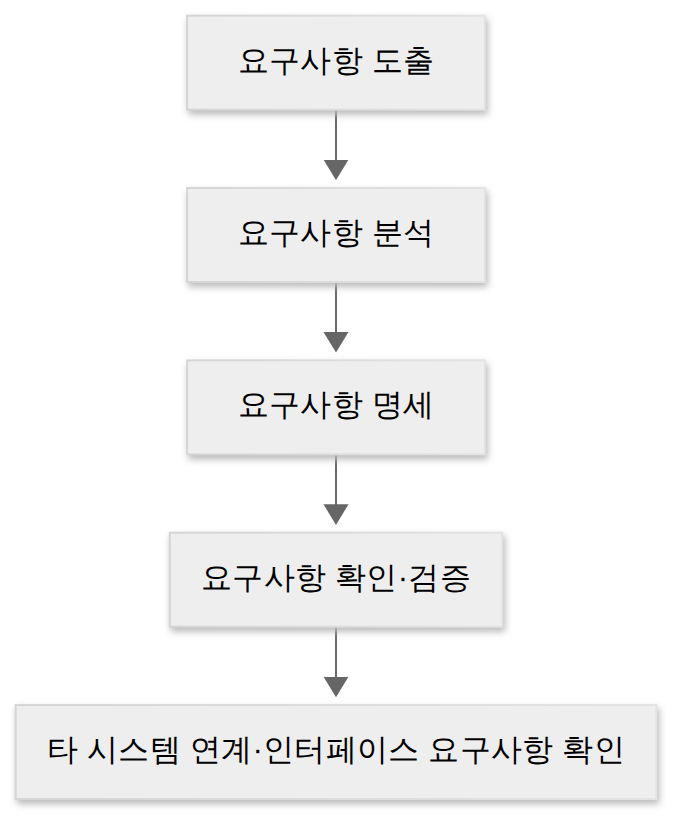
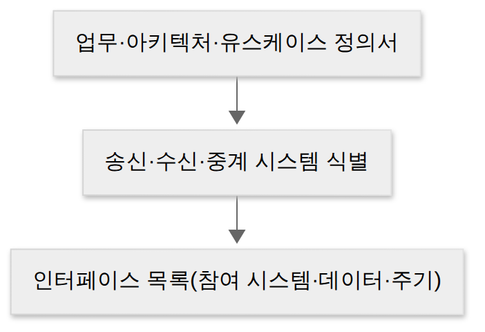

D015 · 인터페이스 요구사항 확인 · 대상 식별 — 내·외부 인터페이스와 인터페이스 시스템
A4 어제까지 A3에서 부품을 잘 만드는 법을 봤어요. 모듈을 나누고(결합도·응집도), 아키텍처로 배치하고(D011), 객체로 설계하고(D013), 반복되는 문제에 검증된 패턴을 얹었죠(D014). 그런데 잘 만든 부품들도 서로 말을 걸 때 쓰는 말투와 예절이 어긋나면 아무 일도 못 해요. 오늘부터 시작하는 A4 인터페이스 설계가 바로 그 이야기예요. 시스템 하나만 잘 만드는 시대는 끝났고, 요즘 시스템은 신용정보원·국세청·배송사·결제사처럼 남의 시스템과 대화하는 일이 본업의 절반이에요. 그래서 오늘은 ① 인터페이스 요구사항을 확인하는 일(내·외부 인터페이스 요구사항), ② 대화 상대를 정하는 일(인터페이스 대상 식별)을 봐요. 그리고 그 결과가 어떤 모양으로 구현되는지(인터페이스 시스템 = 송신·중계·수신)까지 연결해요.
- 인터페이스가 무엇이고 왜 설계 대상이 되는지(연계 증가, 규약 불일치 비용) 설명하고, 내부 인터페이스와 외부 인터페이스를 상황에서 구별할 수 있다
- 내·외부 인터페이스 요구사항의 구성 7항목과 기능적·비기능적 분류를 설명할 수 있다
- 요구공학 관점에서 인터페이스 요구사항을 도출 → 분석 → 명세 → 확인(검증) 하는 흐름을 설명하고, 확인·검증 절차에 타 시스템 연계 및 인터페이스 요구사항 확인이 들어 있음을 설명할 수 있다
- 시스템 아키텍처를 보고 송신 시스템·수신 시스템·중계(연계) 대상을 식별하고, 인터페이스 대상 목록(참여 시스템·송수신 데이터·주기)을 정리할 수 있다
- 인터페이스 시스템의 구성(송신 · 중계/연계 · 수신)과 연계 방식(직접 vs 중계, 실시간 vs 배치)의 차이를 구별할 수 있다. 미들웨어·오류 처리 상세는 D017(A4 상세 설계)로 이어진다
1. A4 지도 — 오늘 위치
2. 인터페이스는 왜 설계 대상인가
앞에서 우리는 모듈 안쪽을 잘 만드는 법을 배웠죠. 그런데 실제 프로젝트에서 일정을 잡아먹는 건 대개 내부 코드가 아니라 경계예요. 주문 시스템을 새로 만든다고 해 봐요. 결제는 PG사, 세금계산서는 국세청, 배송은 물류사, 회원 정보는 그룹 통합 계정 시스템에서 와요. 각 시스템은 서로 다른 회사가, 다른 시기에, 다른 기술로 만들었어요. 우리만 예쁘게 만들어 봐야, 상대가 기대하는 필드 이름과 날짜 형식이 다르면 데이터는 조용히 버려지거나 잘못 해석돼요. 이 “서로 다르게 생긴 시스템이 만날 때 생기는 마찰 비용”이 인터페이스 문제예요.
그래서 인터페이스는 접속 방법이나 규칙을 미리 정하는 일이에요. 시험 정의도 정확히 이 표현을 써요 — “조직 내·외부에 존재하는 시스템들이 상호 접속을 통해 특정 기능을 수행하기 위한 접속 방법이나 규칙에 대한 필수적 요구사항”이 내·외부 인터페이스 요구사항이에요. 여기서 중요한 건 “필수적”이라는 말이에요. 인터페이스 규칙은 예쁘게 하려고 정하는 게 아니라, 이게 없으면 기능 자체가 성립하지 않아서 반드시 정해야 하는 거예요.
인터페이스를 붙이면 얻는 건 분명해요. 우리가 직접 만들지 않은 기능을 가져다 쓸 수 있고, 회사 밖 데이터를 쓸 수 있고, 변경을 상대에게 맡길 수 있어요. 대신 대가도 따라와요. 연계를 붙이는 순간 서로의 장애가 전염병처럼 건너옵니다. 그래서 인터페이스 규칙에는 “무엇을 주고받나”만큼 “안 되면 어떻게 하나(오류 처리)”가 들어가야 해요. 그리고 D012에서 배운 결합도가 시스템 사이로 확장돼요. 상대의 내부 사정에 의존하는 연계는 내용 결합도처럼 되고, 표준화된 규약만 의존하는 연계는 자료 결합도처럼 돼요. 어제 배운 어댑터·퍼사드(D014)도 결국 “안 맞는 인터페이스를 맞추는” 같은 문제를 클래스 수준에서 푸는 패턴이고요.
3. 내부 인터페이스 vs 외부 인터페이스
인터페이스를 나누는 첫 번째 기준은 대화 상대가 어디에 있느냐예요. 우리가 만드는 시스템 안의 모듈·컴포넌트끼리 정한 규약이면 내부 인터페이스, 우리 시스템과 바깥의 다른 시스템(같은 회사의 다른 시스템도 포함) 사이 규약이면 외부 인터페이스예요. 내부 인터페이스는 우리가 양쪽을 다 고칠 수 있어요. 그래서 규약을 바꾸고 싶으면 양쪽을 같은 커밋에서 고치면 끝이에요. 반대로 외부 인터페이스는 상대를 우리 마음대로 못 고쳐요. 상대가 언제 바뀔지, 언제 장애가 날지 우리가 통제하지 못하죠.
이 차이가 실무에서 얼마나 큰지, 현업 감각으로 바꿔 말하면 이래요. 내부는 사내 회의실 대화예요. 말이 조금 어긋나면 눈치로 통하고, “그 표현 다시 하자”고 하면 다음 회의부터 바뀌어요. 외부는 국경 검문소예요. 여권(인증)과 통관 규칙(데이터 형식)과 신고서(정의서)가 준비되지 않으면, 세관원은 우리 사정을 봐주지 않고 그냥 세워 둡니다. 신분증 없이 “저 사람이 맞아요”라고 말해 봐야 소용없는 것처럼, 외부 연계는 문서와 형식으로만 증명돼요. 그래서 외부 인터페이스는 명세·합의·검증에 훨씬 많은 공을 들여요.
자료에 따라 경계를 다르게 보기도 해요. 확인한 필기 요약들은 “내·외부 인터페이스 요구사항”을 조직 내·외부 시스템이라는 한 덩어리로 정의하고, 실기 해석 중에는 “송신·전달 영역은 외부 모듈, 수신측 영역은 내부 모듈”처럼 모듈 기준으로 나눈 자료도 있었어요. 큰 흐름은 “우리 안이냐 밖이냐”이고, 시험에서도 상황이 명백한 것만 나와요.
출제자는 이 지점을 참 좋아해요. “내부 인터페이스 = 외부 시스템과의 연계”처럼 안팎을 뒤집어 놓고 채점을 기다려요. 상황을 읽을 때 “이 두 시스템을 우리가 다 고칠 수 있나?”를 먼저 물으면 뒤집힌 선지에 걸리지 않아요.
4. 내·외부 인터페이스 요구사항의 구성 7항목
앞에서 “접속 방법이나 규칙”이라고 했는데, 그 규칙을 문서로 적을 때 실제로 빠지면 안 되는 항목이 7개예요. 하나씩 “왜 이 항목이 필요한가”를 보면 자연스럽게 외워져요. 인터페이스 이름은 이 규약을 부르는 식별자예요. 이름이 없으면 문서와 코드와 로그에서 같은 규약을 서로 다른 말로 부르게 되고, 그러면 대화가 어긋나요. 연계 대상 시스템은 대화 상대를 특정하는 항목이에요. 주문 데이터를 “어디론가” 보낸다고 적으면 그 문서는 못 써요. 연계 범위 및 내용은 그 대화로 무엇을 하고 무엇은 하지 않는지 경계를 정해요. 범위가 없으면 상대는 늘 우리에게 더 많은 걸 기대해요.
연계 방식은 직접 붙을지 중계 서버를 둘지, 실시간인지 배치인지 같은 방법이에요. 송신 데이터는 실제로 주고받는 항목과 형식이고, 여기서 “필드 하나가 빠졌다”가 곧 운영 장애예요. 인터페이스 주기는 언제 얼마나 자주 오가는지예요. 이걸 적지 않으면 수신 시스템은 언제 올지 모르는 손님을 하루 종일 기다립니다. 야간 배치인지 실시간인지 한 줄 적어 두는 게 운영 인력을 살려요. 마지막으로 기타 고려사항에 보안·오류 처리·제약 조건처럼 앞 여섯 항목에 담기 어려운 것을 적어요.
한 장 요약 — 7항목과, 그 항목이 빠졌을 때 현장에서 벌어지는 일이에요.
| 항목 | 적는 내용 | 빠지면 생기는 일 |
|---|---|---|
| 인터페이스 이름 | 이 규약의 식별자(ID·명칭) | 문서·코드·로그에서 서로 다른 이름으로 불려 추적이 끊김 |
| 연계 대상 시스템 | 누구와 주고받는가 | “어디론가” 보내는 셈이 되어 테스트 자체가 불가능 |
| 연계 범위 및 내용 | 무엇을 하고 무엇은 안 하는가 | 상대가 범위를 계속 넓혀 요구, 책임 경계 다툼 |
| 연계 방식 | 직접/중계, 실시간/배치 등 | 양쪽이 다른 방식으로 구현해 첫 연동부터 실패 |
| 송신 데이터 | 항목·타입·길이·코드 | 필드 누락·형식 불일치가 운영 장애로 이어짐 |
| 인터페이스 주기 | 전송 시각·빈도·트리거 | 수신 측이 언제 올지 몰라 대기·재처리 판단 불가 |
| 기타 고려사항 | 보안·오류 처리·제약·성능 | 장애 상황 대응이 그때그때 즉흥적으로 결정됨 |
이 7항목은 두 갈래로 다시 나뉘어요. 기능적 요구사항은 “연계를 통해 수행될 기능”에 대한 것이고, 비기능적 요구사항은 성능·사용 용이성·신뢰도·보안성·운용상 제약·안정성처럼 시스템 전반에 걸린 것이에요. 기능적 요구사항의 특성은 기능성·완전성·일관성(기완일), 비기능적 요구사항의 특성은 신뢰성·사용성·효율성·유지보수성·이식성(신사효유이)으로 정리돼요. 확인한 두 자료(필기 요약 두 곳)가 같은 분류를 썼어요.
5. 요구사항 확인 — 도출 · 분석 · 명세 · 확인(검증)
앞 절에서 “무엇을 적어야 하는가”를 봤으니, 이제 “그걸 언제 어떻게 만들어 내는가”예요. 이건 인터페이스만의 문제가 아니라 요구사항 전체를 다루는 방법론, 즉 요구공학의 흐름이에요. 요구공학은 사용자 요구를 도출 → 분석 → 명세 → 확인 및 검증하는 구조화된 활동이고, 앞 글자를 따 도분명확이라고 외워요. 도출은 요구를 캐내는 단계(인터뷰·브레인스토밍·델파이·롤플레잉·워크숍·설문), 분석은 캐낸 요구의 충돌·중복·누락을 정리해 완전성과 일관성을 확보하는 단계, 명세는 그 결과를 문서로 적는 단계(비정형 명세 = 자연어, 정형 명세 = 수학적 표기), 확인 및 검증은 적은 문서가 맞는지 되짚는 단계예요.
인터페이스도 똑같이 흘러요. 먼저 식별 및 분류 프로세스가 있어요 — 요구사항을 식별하고 → 관련 명세서와 현황 자료를 준비하고 → 기능 요구사항과 비기능 요구사항으로 분류해요. 그다음 명세서 구체화 프로세스가 이어져요. 기존 요구사항 정의서를 세분화하고 → 내·외부 인터페이스 요구사항 내용을 이해하고 수정하고 → 누락된 요구사항을 새로 정의하고 → 정리해요. 순서를 보면 알겠지만, 이 두 프로세스의 핵심은 “이미 있는 문서를 확장하는 것”이지 백지에서 새로 쓰는 게 아니에요. 요구공학의 목적도 같은 방향이에요 — 효과적인 의사소통 수단 제공, 요구사항에 대한 공통된 이해 설정, 누락 방지, 이해 오류로 인한 불필요한 비용 절감, 변경 추적 가능.
마지막이 오늘의 핵심이에요. 요구사항 확인 및 검증 절차는 ① 요구사항 목록 확인 → ② 요구사항 정의서 작성 여부 확인 → ③ 비기능적 요구사항 확인 → ④ 타 시스템 연계 및 인터페이스 요구사항 확인 순서로 진행돼요. 검증 단계는 요구사항 정의서에게 거짓말 탐지기를 들이대는 단계예요. “다 적었다”고 말하는 문서를 놓고 빠진 항목을 찾아냅니다. 그리고 그 탐지기의 마지막 질문이 “그래서 바깥 시스템과는 잘 붙어?”예요. 인터페이스는 문서 안에서 아무리 완벽해 보여도 상대 시스템과 실제로 맞물리지 않으면 소용이 없기 때문에, 확인·검증의 맨 끝에 타 시스템 연계 확인이 놓여요. 검증 기법은 동료 검토·워크스루·인스펙션(동워인) 같은 정형 기술 검토와 프로토타이핑·모델 검증·테스트·CASE 도구 활용 등이 있어요.

6. 시스템 아키텍처에서 인터페이스 대상 식별
문서가 준비됐으니 이제 “누구와 대화할 것인가”를 정할 차례예요. 시스템 아키텍처는 시스템의 구조·행위·동작 원리를 설명하는 프레임워크예요. 목적을 달성하기 위해 컴포넌트가 어떻게 상호작용하고 정보를 어떻게 교환하는지를 설명하고, 구성 요소끼리의 관계와 외부 환경과의 관계까지 담아요. 바로 이 “외부 환경과의 관계”가 인터페이스 대상 식별의 출발점이에요. 대상 식별은 개발 대상 시스템과 연결된 연계 시스템 사이의 인터페이스를 찾아내는 일이고, 그 입력 자료는 업무 정의서·시스템 아키텍처 정의서·유스케이스 정의서 같은 문서예요. 이 문서들을 보면 송신 시스템·수신 시스템·중계 시스템이 드러나요.
대상 식별은 이삿짐에 라벨을 붙이는 일이에요. 보내는 집(송신)·받는 집(수신)·경유 창고(중계)를 정해 두지 않으면, 짐은 어딘가에서 멈춰 서 있어요. 어느 시스템에서 어느 시스템으로, 어떤 데이터를, 얼마나 자주 보내는지 — 이 세 가지가 라벨이에요. 이 라벨을 붙이면 A4에서 배운 연계 데이터와 데이터 표준이 더 구체적으로 이해돼요. 인터페이스 목록 도출 시 확인한 자료들은 항목으로 인터페이스 ID·인터페이스 명·송신 시스템·수신 시스템·대내외 구분·연계 방식·통신 유형·처리 유형·주기·데이터 형식·관련 요구사항 ID를 들어요. 앞 절의 구성 7항목과 거의 겹치죠? 문서에 적는 항목(7항목)과 목록으로 관리하는 항목이 같은 뿌리에서 나온다는 게 보여요.
아키텍처를 볼 때 같이 기억할 설계 원칙도 있어요. 시스템 아키텍처 설계 원칙은 대확고운보예요 — 대규모 트랜잭션 처리 및 온라인 성능 보장, 시스템 아키텍처 확장성 보장, 서비스 고가용성 보장, 운영관리 효율성, 시스템 보안 강화예요. 그리고 시스템을 이루는 구성 요소는 입력·처리·출력·제어·피드백 다섯 가지로 설명할 수 있어요. 입력은 밖에서 들어오는 자극, 처리는 그 자극을 목적에 맞게 바꾸는 일, 출력은 그 결과, 제어는 처리 과정이 정해진 방식대로 가도록 감시·조정하는 일, 피드백은 출력 결과를 다시 입력 쪽으로 되돌려 다음 처리를 바꾸는 일이에요.

7. 인터페이스 시스템 — 송신 · 중계 · 수신
식별한 대상을 실제로 도는 모습으로 보면 인터페이스 시스템이에요. 인터페이스 시스템은 기본적으로 송수신 시스템으로 구성되고, 연계 방식에 따라 그 사이에 중계 서버를 둘 수 있어요. 송신 시스템은 연계할 데이터를 DB와 애플리케이션으로부터 연계 테이블이나 파일 형태로 생성해서 보내는 쪽이에요. “데이터가 생기자마자 바로 쏜다”가 아니라 “연계 테이블·파일에 담아 내보낸다”는 점이 중요해요. 이 중간 산출물이 있기 때문에 배치도 실시간도 같은 구조 위에서 돌아가요. 수신 시스템은 받은 연계 테이블이나 파일 데이터를 자기 DB에 저장하거나 애플리케이션에서 쓸 수 있도록 제공하는 쪽이에요. 받아서 끝이 아니라 “쓸 수 있게 만든다”까지가 수신 시스템의 일이에요.
중계 서버는 송수신 사이에서 데이터를 송수신하고 모니터링하는 시스템이에요. 중계 서버는 송수신 사이에 선 환승 안내원 같아요. 데이터를 갈아태우고, 없어진 짐이 없는지 대장에 적어 둡니다. 대장이 있다는 게 핵심이에요. 그래서 중계를 두면 연계 데이터의 보안 강화(암복호화·통제 지점 일원화)와 다중 플랫폼 지원(서로 다른 네트워크·프로토콜을 한곳에서 흡수)이 가능해져요. 이름은 자료마다 조금 달라요. 어떤 자료는 “연계 서버”, 어떤 자료는 “중계 서버”라고 불러요. 내용은 같으니, 본문에서는 둘을 중계(연계) 서버로 병기할게요.
주고받는 데이터에는 표준이 있어요. 인터페이스 시스템 사이에서 교환되는 데이터는 규격화된 표준 형식을 정해 써야 해요. 그 구성을 공개종이라고 외워요 — 공통부는 인터페이스 표준 항목(누가·언제·무엇을 보내는지 같은 머리말), 개별부는 송수신 시스템에서 업무 처리에 실제로 필요한 데이터(주문번호·금액 같은 알맹이), 종료부는 전송 데이터의 끝을 표시하는 문자예요. 톨게이트를 떠올리면 쉬워요. 공통부는 “차량번호·진입 시각”을 적는 기본 정보, 개별부는 화물 목록, 종료부는 “이상 없음” 도장이에요.
한 장 요약 — 인터페이스 데이터 표준 구성이에요.
| 구성 | 담는 것 | 생활 비유 |
|---|---|---|
| 공통부 | 인터페이스 표준 항목(식별·시각 등 공통 머리말) | 톨게이트의 차량번호·진입 시각 |
| 개별부 | 송수신 시스템의 업무 처리에 필요한 데이터 | 화물 목록·수량 |
| 종료부 | 전송 데이터의 끝을 표시하는 문자 | “이상 없음” 도장 |
연계 방식은 어디서 만나느냐로 갈려요. 직접 연계는 두 시스템이 직접 붙는 방식이라 처리 속도가 빠르고 구현이 단순하며 개발 비용·기간이 짧아요. 대신 서로의 결합도가 높아 한쪽이 바뀌면 민감하게 흔들리고, 보안을 위한 암복호화 처리와 비즈니스 로직을 인터페이스마다 따로 작성해야 하며, 전사 시스템 인터페이스의 통합 환경을 만들기 어려워요. 간접 연계는 중계(연계) 서버를 두는 방식이에요. 서로 다른 네트워크·프로토콜을 가진 시스템들을 묶어 통합 관리할 수 있고 인터페이스 변경에도 유연해요. 대신 아키텍처와 연계 절차가 복잡해지고, 연계 서버를 거치는 만큼 성능 저하가 생기며, 개발·테스트 기간이 더 길어져요.
통신 유형은 크게 실시간과 배치예요. 실시간은 단방향(응답이 필요 없는 업무 — 요청만 하고 기다리지 않음), 양방향(응답이 필요한 업무), 동기(응답이 올 때까지 대기), 비동기(요청하는 서비스와 응답을 처리하는 서비스가 분리되어, 요청을 보내 두고 다른 일을 하다가 신호가 오면 처리), 지연 처리(비동기·단방향과 유사, 순차 처리·지연이 필요한 업무)로 나뉘어요. 배치는 정해진 시간에 DB나 파일 거래로 통신하는 방식이고, 연계 스케줄러가 구동하는 이벤트 방식과 타이머에 의한 방식이 있어요. 물리 구성은 1·2·3-Tier로 설명돼요 — 1-Tier는 AP/DB 서버를 1대 이상 두고 UI 로직 없이 인터페이스 게이트웨이 업무에 쓰고, 2-Tier는 UI+비즈니스 로직과 데이터를 2대 이상으로 나눠 일반 OLTP 업무에 쓰며(비즈니스 로직 유출 가능), 3-Tier는 프레젠테이션 서버·AP/DB 서버 3대로 대용량 온라인 트랜잭션을 처리하고 유출 방지에 유리하지만 물리 노드가 3개 이상 필요하고 Tier 간 트래픽이 생겨요.
8. 시험 포인트
- 내·외부 인터페이스 요구사항 = “조직 내·외부 시스템들이 상호 접속을 통해 특정 기능을 수행하기 위한 접속 방법이나 규칙에 대한 필수적 요구사항”. 상황에서 우리 시스템 안(내부) / 바깥 시스템과(외부)를 갈라 읽는다
- 구성 7항목: 인터페이스 이름 · 연계 대상 시스템 · 연계 범위 및 내용 · 연계 방식 · 송신 데이터 · 인터페이스 주기 · 기타 고려사항
- 분류: 기능적(기완일 — 기능성·완전성·일관성) / 비기능적(신사효유이 — 신뢰성·사용성·효율성·유지보수성·이식성)
- 식별·분류 프로세스: 요구사항 식별 → 명세서·현황 자료 준비 → 기능/비기능 분류. 명세서 구체화: 정의서 세분화 → 내용 이해·수정 → 누락 요구사항 신규 정의 → 정리
- 요구공학 = 도분명확(도출·분석·명세·확인 및 검증). 확인·검증 절차 = 목록 확인 → 정의서 작성 여부 확인 → 비기능 확인 → 타 시스템 연계 및 인터페이스 요구사항 확인
- 대상 식별 입력: 업무 정의서 · 시스템 아키텍처 정의서 · 유스케이스 정의서 → 송신·수신·중계 시스템 식별 → 인터페이스 목록(참여 시스템·송수신 데이터·주기)
- 시스템 아키텍처 = 구조·행위·동작 원리를 설명하는 프레임워크. 설계 원칙 대확고운보. 구성 요소는 입력·처리·출력·제어·피드백
- 인터페이스 시스템 = 송신 · 수신 (+ 중계 서버). 데이터 표준 공개종. 1·2·3-Tier 물리 설계. 직접 vs 간접 연계 장단점, 실시간(단방향·양방향·동기·비동기·지연) vs 배치(이벤트·타이머)
9. 오답 복습 — D009-7 UI 설계 원칙, 이번엔 상황으로
어제 D014-3도 아직 채점 전이라, 같은 개념(UI 설계 원칙의 유효성)을 또 한 번 가져왔어요. 지금까지 네 번 고르는 동안 유효성은 늘 정답 쪽에 있었는데 손은 늘 유연성으로 갔어요. 그래서 오늘은 이름과 정의를 다시 외우는 대신, 상황에서 두 질문으로 갈라 보는 연습을 해요. 질문 하나는 “끝났어?”, 다른 하나는 “편하게 했어?”예요.
“편하게 했어?”는 과정을 묻는 질문이에요. 마우스로 하든 키보드로 하든 받아 줬는지, 되돌리기를 제공했는지, 실수를 미리 막아 줬는지. 이게 유연성이에요. 반대로 “끝났어?”는 결과를 묻는 질문이에요. 내가 하려던 일이 정확하고 완전하게 달성됐는지. 예를 들어 화면 조작은 아주 편했는데, 사용자가 고른 것과 다른 날짜로 처리됐다면 과정은 좋았지만 결과가 틀렸어요 — 이때 놓친 게 유효성이에요. 반대로 결과는 정확한데 조작 방법이 하나뿐이고 실수해도 되돌릴 수 없다면, 유효성은 지켰지만 유연성이 부족한 거예요.
한 장 요약 — 같은 상황을 두 질문으로 갈라 보는 표예요.
| 질문 | 보는 것 | 해당 원칙 |
|---|---|---|
| 편하게 했어? | 과정 — 다양한 조작 방식, 실수 방지·되돌리기 | 유연성 |
| 끝났어? | 결과 — 목표를 정확하고 완전하게 달성 | 유효성 |
| 처음 봐도 알겠어? | 설명 없이 첫눈에 이해 | 직관성 |
| 배우고 기억하기 쉬워? | 익히는 속도와 기억 지속 | 학습성 |
확인 문제
- 다음 중 외부 인터페이스에 해당하는 것은?
- “타 시스템 연계 및 인터페이스 요구사항 확인”이 속하는 요구공학 단계는?
- 한 쇼핑몰이 배송 화면을 개편했어요. 주소 입력은 마우스·키보드·음성 입력을 모두 받아 주고, 저장 전에는 언제든 되돌릴 수 있게 했어요. 그런데 사용자가 고른 도착 희망일이 시스템 오류로 하루 뒤 날짜로 저장되어, 경고 없이 다른 날 도착했어요. 이 화면이 놓친 UI 설계 원칙은?
고른 뒤 답안 복사 → 디스코드 공부 채널에 붙여넣기 하면 돼요.
답장: 정처기 D015: 1)번호 2)번호 3)번호